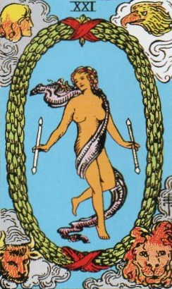
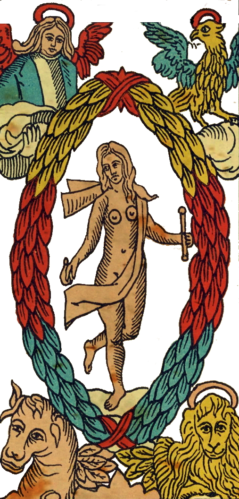
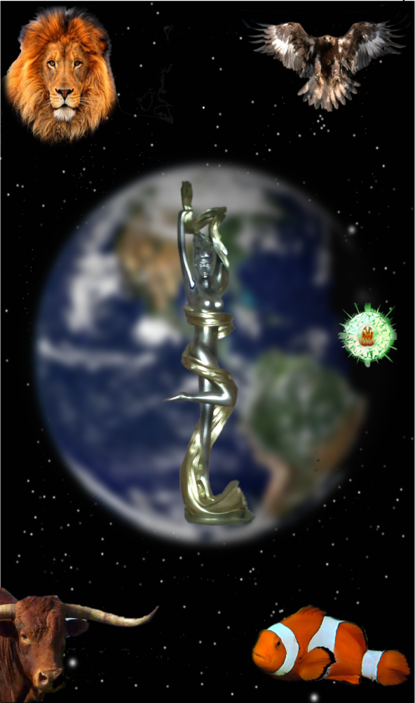
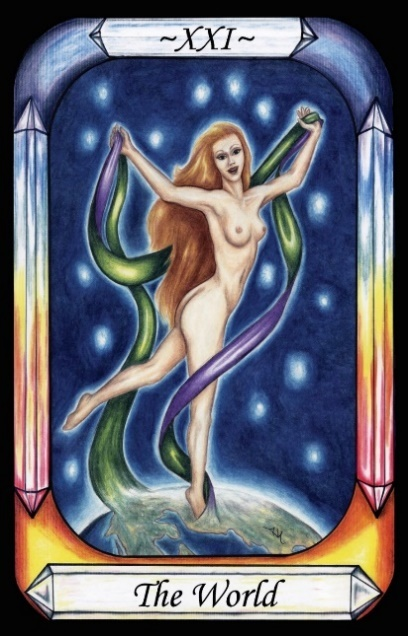
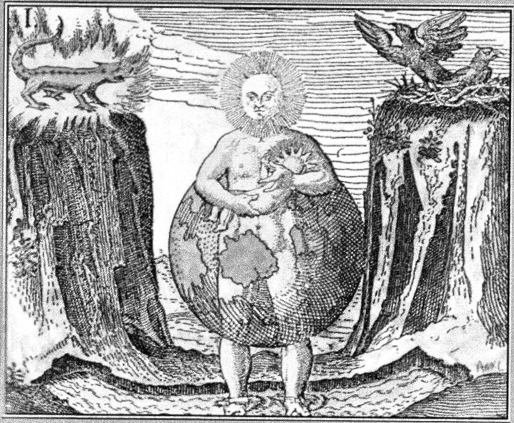

The World




Representation |
Mother Earth |
Meaning |
The manifestation of the material world below, in terms of the four elements of Nature |
Opposite card |
The Wheel of Fortune, representing the divine versions of the four elements above, and the Word and the Demiurge, to create the Governors who rule the material. |
Function |
The World is the material or sensible world of Nature that is created within the domain of Fire, creation and operation, by the Demiurge.
[P12] In the Mind is the Archetypal Form, which has always been and is limitless. Nature received the word and copied the Archetypal world, becoming her own cosmos, by use of her own elements and the births of souls. [The World]
[P14] Its work done, the Word left the domain of Nature, and ascended to be with the Demiurge. This left the elements of Nature without mind or reason, only Matter.
[P16] Reason (the Word, the Logos) was withheld from Nature, and so she brought forth reason-less lives from matter: Air brought forth winged creatures. Water brought forth creatures that swim.
RWS Imagery:
A woman, nude except for a length of dark cloth, dances with a wand of manifestation in each hand. The Wands are the same as in the Magician card. She is surrounded by a laurel wreath, and in the four corners of the card are the heads of four beasts – Human, Eagle, Bull, Lion.
Note the absence of the books that are present in the Wheel, indicating the absence of the word, as in:
[P14] – The word left the domain of Nature.
Discussion
The woman dancing is Mother Nature, who copied the four elements from heaven into the material world, and made beasts, and the body of the man, from them. Waite presents Man as the beast aspect of the Air element, possibly indicating our rational and socio-political nature.

Figure 28 - Alchemical Image of the World Engraving 1
from, J.D. Mylius Philosophia reformata, Frankfurt, 1622.
In Figure 27 we see a typical representation of the world from the period. A rocky canyon contains Water, with a Fire lizard at the top left, and a nest of eagles at the top right. A person with the Moon for a head is clothed in an image of the Earth, and holds a child with the Sun for a head. This appears to be both true to the Pymander, plus a reference to Isis, who lays claim to having birthed the Sun.